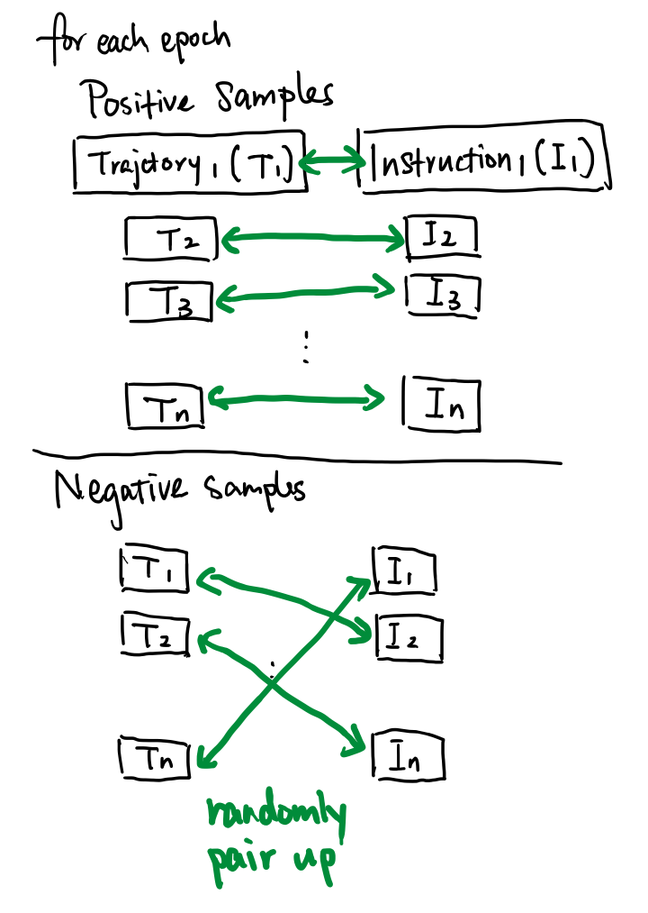
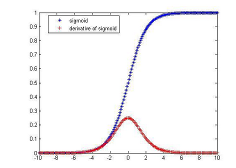
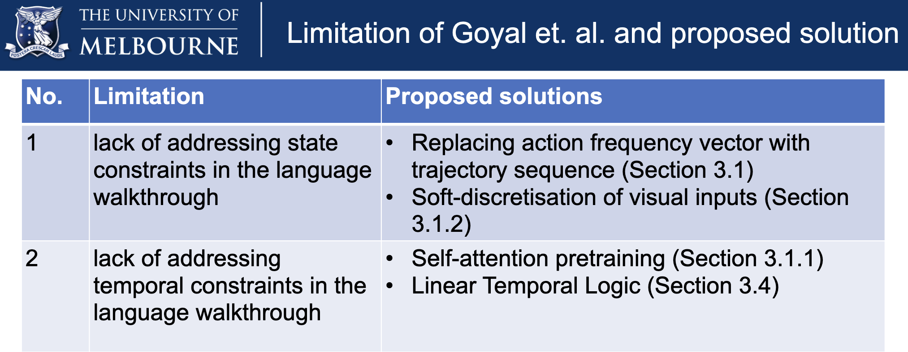
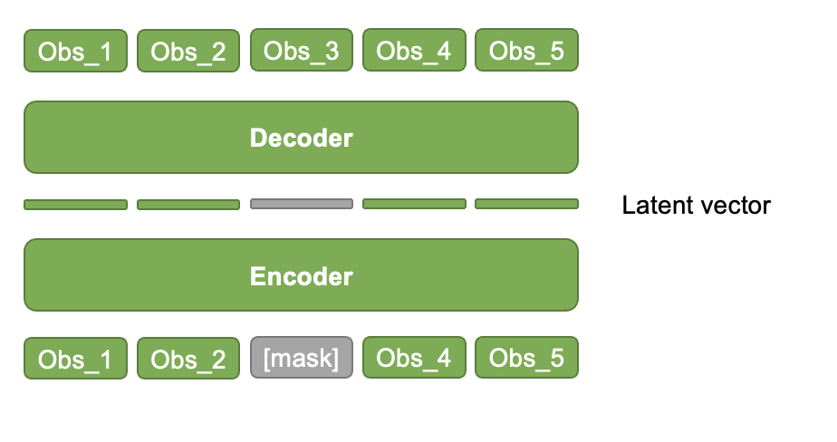
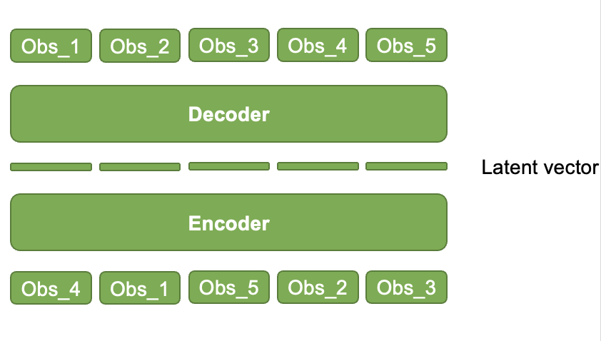
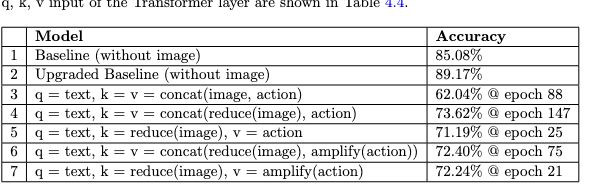

Last Week’s Work Review#
Most importantly, we need to pass the oral presentation in the confirmation review.
You need password to access to the content, go to Slack *#phdsukai to find more.
Part of this article is encrypted with password:
[TOC]
TODO List#
- mindmap for proposed method and also explanation
- redo the slides and rehearse and record
- Write down the theory part and show to your tutor.
-
Continue experiments on reward shaping module- recreate consistent training and testing dataset
- archive the original model and every improved ones
-
continue the experiment stated in the project readme file -
set up RL environment - solving the mis-matched (in-batch) negatives issue
- check this paper MPNet: Masked and Permuted Pre-training for Language Understanding
- check paper Retrieve Fast, Rerank Smart: Cooperative and Joint Approaches for Improved Cross-Modal Retrieval
- check paper DiffCSE: Difference-based Contrastive Learning for Sentence Embeddings
28 Aug - 31 Aug#
- upload new version to github
- setup wandb https://wandb.ai/sino-huang/Goyal%20Reward%20Shaping%20Improvement?workspace=user-sino-huang
- ask goyal about their RL environment and simple tasks implementation
- trajectory-ready model (simple LSTM model)
- trajectory-ready model (transformer model)
-
regression model -
ready to get RL environment (next week)
21 Aug - 27 Aug#
Mis-matched (in-batch) negatives classification training issue#
- I re-implement the dataloader of the reward shaping module training (for the binary classification task about whether the trajectory and the instruction are matched). The old dataloader generated “easy-to-identify” random negative samples. E.g., the past action sequence of negative samples is created by random uniform distribution generator, which is too fake. Now, the new dataloader generates the negative samples by randomly pair up the trajectories and instructions (a.k.a. “in-batch negatives”). See the diagram below:

-
We can see that for every epoch the model will face the same bunch of positive samples. However, the negative samples can be diverse as there can be very large combination patterns constructing the negative samples.
-
Unfortunately, the training loss does not improve with the mis-matched (in-batch) negatives. Maybe it is because for every epoch the model encountered different negative sample data and therefore the training becomes unstable.
-
Note that Fan Jiang is working on negative sampling for a different NLP task (in his case, finding even harder negatives using a separate search step).
-
If I cannot find suitable solution, I think an alternative way is to change from binary classification problem to regression problem, by forcing the encoding vector of trajectory be cosine similar to the encoding vector of language, given that regression model is easier to get trained than classification model
Some discussions online about binary classification with positive and negative samples#
- training a binary classifier using imbalanced data where majority class is negative
- possible solution:
- increase batch size, in-batch we ensure balanced data points
- change accuracy metric to precision-recall metrics
- possible solution:
- Always getting value one for a binary classifier
- some also mentioned that imbalanced training data may cause the problem
- CNN always predicts either 0 or 1 for binary classification
- some suggested to add batch normalisation layer
- Binary Classifier making only one prediction
- suggestion:
- weighting class if imbalanced
- add batch norm layer
- Saturating the sigmoid results in null gradients and thus no learning.

\
- suggestion:
- Keras model always predicts same output class
- Suggestion:
- use SGD optimiser and batch norm layer
- check your input range especially the images
- Suggestion:
- paper “How Does Batch Normalization Help Binary Training?”
- paper “Training Binary Neural Networks without Batch Normalization”
14 Aug - 20 Aug#
restructure the proposed method and motivation#

Self-attention pre-training#
-
Original idea
- Like the BERT masked training to mask out some Observation vector and try to recover it
-

-
but if we want to capture the temporal information
- why not do this
- randomly shuffle the input and try to recover the correct ordering
-

- There are BERT variant that use this method to train the model, but I cannot remember…
- check this paper MPNet: Masked and Permuted Pre-training for Language Understanding
07 Aug - 13 Aug#
How to evaluate Goyal’s reward shaping module and the incoming improved reward shaping module#
So far my evaluation metric is not clear.

-
people will wonder why baseline model has a better accuracy score than the improved model -> it is because the dataset for evaluation on the baseline model versus the one on the improved model are different.
- Baseline model’s evaluation data is the agent’s action and instruction pair while the improved model’s evaluation data is the agent’s trajectory and instruction pair.
-
The goal of reward shaping module is to predict whether agent’s behaviour is consistent with the walkthrough instruction.
- agent’s past trajectory implies the agent’s past behaviours
-
So, we need to construct a dataset that contains positive samples where the agent’s past trajectory and the instruction are matched and negative samples where the agent’s trajectory and language instruction are not matched.
-
So we will evaluate how good the reward shaping module can recognise the binary classification correctly
-
So the evaluation metric is F1-score
So for Goyal’s module, they just use past action sequence to represent the agent’s past behaviour
Paper Reading Notes#
-
Multi-modal Alignment Using Representation Codebook
- Author: Jiali Duan, Liqun Chen et. al.
- Publish Year: 2022 CVPR
- Review Date: Tue, Aug 9, 2022
-
MPNet: Masked and Permuted Pre-training for Language Understanding
- Author: Kaitao Song et. al.
- Publish Year: 2020
- Review Date: Thu, Aug 25, 2022
-
Retrieve Fast, Rerank Smart: Cooperative and Joint Approaches for Improved Cross-Modal Retrieval
- Author: Gregor Geigle et. al.
- Publish Year: 19 Feb, 2022
- Review Date: Sat, Aug 27, 2022
-
DiffCSE: Difference Based Contrastive Learning for Sentence Embeddings
- Author: Yung-Sung Chuang et. al.
- Publish Year: 21 Apr 2022
- Review Date: Sat, Aug 27, 2022